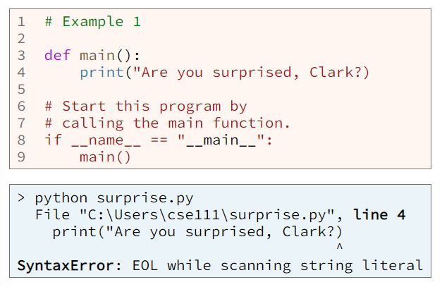
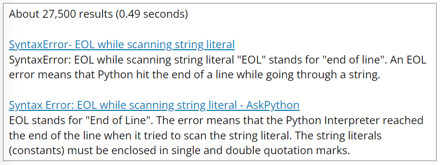
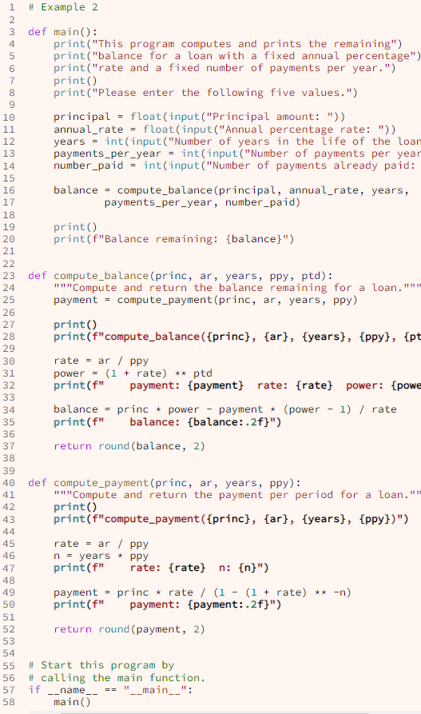
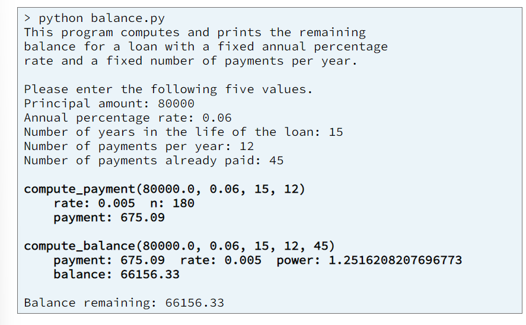

Broadly speaking, there are two types of mistakes or errors that a programmer might make when writing a program: syntax errors and logic errors. A syntax error is a mistake made by a programmer that voilates the rules of a programming language such as misspelling a keyword, forgetting to type a closing parenthesis, or forgetting to type a colon(:) at the end of an if statement. A syntax error will cause the computer to terminate a Python program and print an error message to the terminal window. A logic error is a mistake made by a programmer that causes the computer to produce the wrong results. Often, a logic error will not cause the computer to terminate a program or to print an error message. It will simply cause the computer to produce incorrect results.
Regardless of the type of error (syntax or logic), if the computer prints an error message while executing a program, the first thing a programmer should do is read and understand the error message. Example 1 shows a simple Python program that contains a syntax error. The message that the computer printed because of the syntax error is shown below example 1.
From the error messsage, we read that example 1 contains a syntax error and that the error is on line 4 of the program where there is something wrong with the string. By examining the error message and the program at line 4, we learn that the programmer forgot to type the closing double quote at the end of the string. By the way, EOL that appears in the error message is an acronym for "end of line." You might also see the acronyms EOF and EOT which mean "end of file" and "end of transmission."
If the computer prints an error message that you don't understand, you can research the internet for its meaning. Simply copy and paste the error message into the search bar of your browser. Here are two of the search results from Google for the error message "SyntaxError: EOL while scaning string literal."
If the computer doesn't print an error message, but your program is producing incorrect results, you could add print statements to your program in strategic locations to help you find the mistakes. These print statements should print the value of the variables in your program so that you can examine the values to ensure they are correct. Example 2 contains a program with a complex calculation for computing the remaining balance of a loan. Notice the print statements at lines 28, 32, and 35 and also at lines 43, 47, and 50. The programmer wrote these print statements at important points in the program, specifically near the beginning of each function and in the middle of the calculations.
 Although print statements are simple to understand and add to a program and often helpful, in many situations they are not the most effective way to find logic errors.
Many programmers underestimate the effectiveness of writing and running test functions to find logic errors in a program. Many programmers will write a complete program with multiple functions and never pause to test any part of it. Instead, they will write the entire program and then do something similar to the following steps:
This method for finding and fixing mistakes is time consuming because the programmer is trying to test the whole program at once. Instead, the programmer should test each individual function by writing and running test functions.
A debugged is a software development tool that allows a programmer to watch the computer execute the statements in a program. While using a debugger, a programmer can examine the values stored in a program's variables as the computer executes each line of the program. A debugger is a very effective tool for finding mistakes in a program. Nearly all programming languages and environments include a debugger. Professional software developers use a debugger nearly every single work day. Most companies will not use a programming language unless that language includes a debugger.
The Python programming language includes a debugger that you can use while writing a program in VS Code. It is much easier to learn how to use a debugger by watching someone use it.
A debugger is also a great learning tool. Using a debugger to step through the statements of your program one at a time and examining the values of the variables after each step wills how you exactly how Python works.